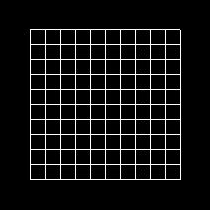

直線
準備
本章はもとの授業資料の第一回 ２次元図形を描く--線・円-- の前半に対応します。
このリポジトリからファイルをダウンロードしたらsample.xcodeproj を開き、実行できるか確認してください。
プログラムの解説
ウィンドウの初期化
void myinit(GLFWwindow** window)
{
glfwInit(); ←説明①
*window = glfwCreateWindow(600, 600, "lines", NULL, NULL); ←説明②
glfwMakeContextCurrent(*window); ←説明③
glClearColor(0, 0, 0, 1); ←説明④
}
ここでは初期化したいウィンドウを引数として受け取り、様々な設定を行います。
説明① glfwInit() は ウィンドウを表示するための下準備 です。必ず書きます。
説明② ここで作りたいウィンドウの情報を設定します。最初の3つの引数でウィンドウの幅、高さ、タイトルを設定しています。残りはフルスクリーンモードや複数のウィンドウを使う時の設定項目ですが、今回は使わないのでNULLにしておきます。
説明③ 作ったウィンドウを以降の処理の対象として設定する関数です。
説明④ glClearColor(); は背景の塗りつぶしの色を決めています。 括弧内左から赤、緑、青色、不透明度の強さを 0.0から1.0の間で設定しています。 この場合だと全ての色が0.0ですので、 黒になります。試しに、
glClearColor(0, 0, 0, 1);
↓
glClearColor(0, 1, 0, 1);
と変更して実行してみて下さい。背景の色は緑色になるはずです。
変数の型についてはこのあとの円のところで説明します。
直線を描く
続いてdisplay関数内で、一本の線を描いています。
void display()
{
glClear(GL_COLOR_BUFFER_BIT); ←説明①
glMatrixMode(GL_MODELVIEW); ←説明②
glLoadIdentity();
glColor3f(1.0f, 1.0f, 1.0f); ←説明③
glBegin(GL_LINES); ←説明④
glVertex2f( -0.5f, 0.0f); ←説明⑤
glVertex2f( 0.5f, 0.0f);
glEnd();
}
説明① glClear(); では 画面を背景色で消去 しています。
説明② glMatrixMode(); glLoadIdentity();については後述します。
説明③ glColor3f(); ではこれから描く 頂点の色 を設定しています。 括弧内の値は左から赤、緑、青の強さで、それぞれ0.0～1.0の値をとります。 ここでは全ての値が1ですので、色は白になります。
説明④ glBegin(); はどのような図形を描くかを指定しています。 GL_LINES は線を描く命令です。
説明⑤ glVertex2f(); は描く 図形の頂点座標 を設定しています。 描ける図形のタイプについては、図形のタイプを見てください。
そして、glEnd();で定義を終わります。
以下のプログラムについては、また次の章で解説することにして、 早速このプログラムに変更を加えましょう。
課題
課題1
一本の線を引くプログラムを変更して、 下図のように平行線を書いて下さい。

課題2
平行線を引くプログラムを変更して、 下図のような図形を作って下さい。
ヒント: まずは下図のような図形を作ります。 最終的な図形は、これを四隅に４つ描いたものです。